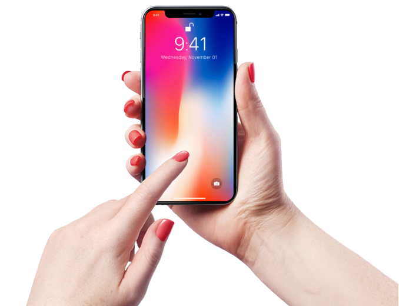

При исследовании влияния качества света на образование хлорофилла в
большинстве случаев проявилась положительная роль красного света.
Большое значение имеет интенсивность освещения. Существование нижнего
предела освещенности для образования хлорофилла было показано в опытах
В.Н. Любименко для проростков ячменя и овса. Оказалось, что освещение
электрической лампой мощностью 10 Вт на расстоянии 400 см было пределом,
ниже которого образование хлорофилла прекращалось. Существует и верхний
предел освещенности, выше которого образование хлорофилла тормозится.
Проростки, выросшие в отсутствие света, называют этиолированными.
Такие проростки характеризуются измененной формой (вытянутые стебли,
неразвившиеся листья) и слабой желтой окраской (хлорофилла в них нет).
Как было сказано выше, образование хлорофилла на заключительных этапах
требует света.
Характеристики
Фитосветильник phibi light 150W
При исследовании влияния качества света на образование хлорофилла в
большинстве случаев проявилась положительная роль красного света.
Большое значение имеет интенсивность освещения. Существование нижнего
предела освещенности для образования хлорофилла было показано в опытах
В.Н. Любименко для проростков ячменя и овса. Оказалось, что освещение
электрической лампой мощностью 10 Вт на расстоянии 400 см было пределом,
ниже которого образование хлорофилла прекращалось. Существует и верхний
предел освещенности, выше которого образование хлорофилла тормозится.
Проростки, выросшие в отсутствие света, называют этиолированными.
Такие проростки характеризуются измененной формой (вытянутые стебли,
неразвившиеся листья) и слабой желтой окраской (хлорофилла в них нет).
Как было сказано выше, образование хлорофилла на заключительных этапах
требует света.

Cледить за досветкой растений легко с мобильным приложением
При исследовании влияния качества света на образование хлорофилла в большинстве
случаев проявилась положительная роль красного света. Большое значение имеет
интенсивность освещения
Подписывайтесь на интересные новости из мира садоводства
При исследовании влияния качества света на образование хлорофилла в большинстве